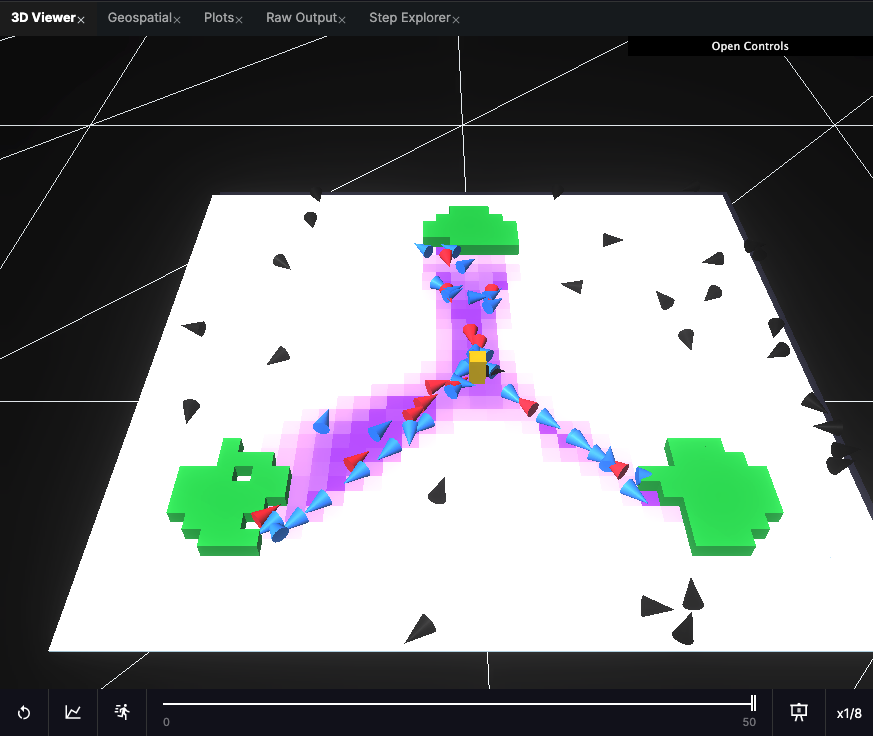
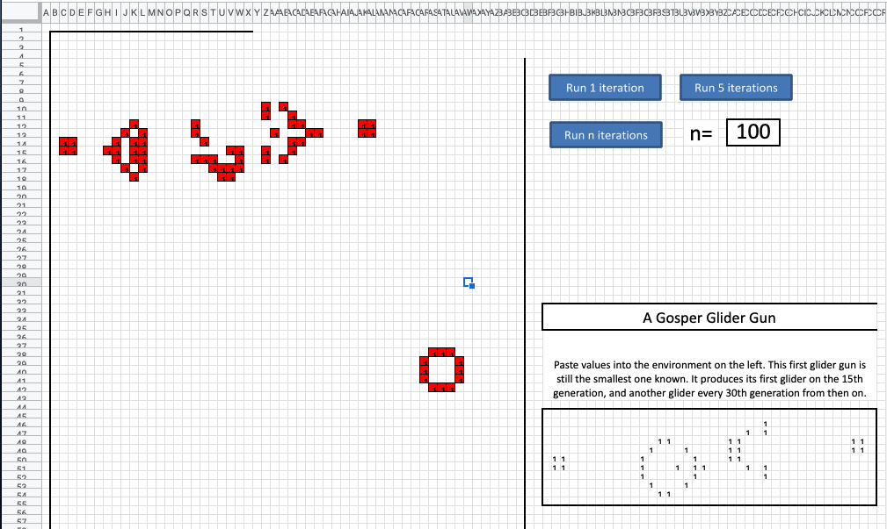

# HASH agent based modelling
This is my review of the HASH beta which I enjoyed checking out.

Ant Foraging Example Simulation
HASH is a platform for creating simulations in which agents such as ants or people move and interact according to
programmable behaviours. Following the simulation, which can be viewed in 3D, there are built in tools for analysis.
Years ago I wanted to practice writing macros in Excel, and having recently learnt about cellular automata and
Conway’s game of life, I cooked up a spreadsheet that could run the simulation. Cells (squares) in the simulation with
two or three ‘on’ neighbours stay ‘on’ (or ‘alive’) in the next time step; otherwise they switch ‘off’. If a cell is
‘off’ but has three neighbours ‘on’, it will switch ‘on’ in the next time step; otherwise it stays ‘off’. People have
developed interesting arrangements like
gliders and
guns which don’t self annihilate or cycle
endlessly.

Did I have nothing better to do in 2013?
Using HASH
I had a look at the
js version on Conway’s Game of Life
HASH.
The project is neatly defined by a collection of json files and at each time step javascript code is executed to
calculate the next state using your computer. This can be slow for complex simulations, and it looks like the incoming
cloud based compute option is where HASH is looking to make money.
The core interface accommodates a modest modern IDE and several visualisation tabs. On the ‘Raw Output’ tab you can
see the log of state changes as a json list. At the bottom of whatever visualisation you’ve chosen is the execution
panel where you can start, stop and replay the simulation.
 HASH is intuitive to use and I like how they’ve decomposed simulations to their component parts.
HASH is intuitive to use and I like how they’ve decomposed simulations to their component parts.
Comparison with Aimsun
The HASH platform is particularly interesting to me as I used to do traffic and pedestrian modelling in Aimsun. Whilst
Aimsun is one of the very best transport modelling tools available, there are some significant deficiencies in the way
modelling is possible, and I think HASH may address some of these.
One example would be cyclist modelling. In Aimsun, vehicles including bikes have a fixed path, as if they were
following rails on the ground. Whilst the Aimsun team has added features to change lanes on multi-lane roads, and more
recently overtaking using the opposite side of the road, the product falls far short of realistic 3 dimensional
interactions between cyclists and cars. Freedom for simulated vehicles to move into gaps and around temporary objects
is crucial to accurately describing behaviour, and where lacking could lead to conclusions which are dangerous to road
users. There are a few academic simulations I’ve seen which do more realistic modelling of 3d space, but to me they
have seemed fairly custom/not very accessible (I seem to remember a single road with simulated vehicles being rendered
in Unreal Engine, in order to illustrate traffic patterns). If HASH offers an accessible and standard way of setting
up such simulations it could be adopted quickly in academia and become a meaningful competitor commercially.
Another modelling assumption made for you in Aimsun and nearly all transport modelling software is that people make
trips from a fixed origin to a fixed destination, and don’t care to travel anywhere else on their way. I think any
platform that allows more depth of purpose is a step in the right direction. The decision makers for transport
infrastructure and modellers have historically simplified trips to origin-destination matrices because it’s easier.
They also tend to have a blind spot because most of these professionals have a role in society which is less likely to
involve a round trip dropping kids off at school, shopping for groceries, part-time work, or going to care for an
elderly relative.
Smaller scale modelling also has depth of purpose challenges. Modelling car parks is only meaningful if there are
spaces involved, and a continually evolving landscape of availability. Being able to add code to model more complex
goals unlocks many possibilities. It’s not too far-fetched to imagine training a ML model to make human like decisions
about purpose.
While HASH gives the user a lot of freedom, there is an overhead in learning to code (not a bad thing in my opinion).
For the scores of transport planners using technically limited but familiar and undemanding specialist software, a
couple of ‘wizards’ to help setup simulations may aid uptake. Aimsun has a feature to automatically generate roads
from Open Street Map layers, which is an amazing time-saver for transport planning professionals. We also used to
waste time fiddling to import altitude points from Google’s API for a realistic 3d surface. I’d highly recommend the
folks at HASH look into streamlining these sorts of tasks to enhance the experience for professional users. At the
time of writing it looks like they’re adding an ‘Initial state generation wizard’ and some other stuff which has high
value
Will People Use HASH
Yes. I can imagine studies at ITS Leeds or elsewhere
cultivating an academic userbase. Also if I were still in the industry, and modelling the use of an arena by
pedestrians with a closed-source paid application, I’d experiment with HASH. Given a few refinements, it could be a
much needed disruptor. For now 3d actors are currently mostly cubes and the geospatial features haven’t been developed
fully. I’m keen to see the roadmap unfold like open-sourcing the Rust Engine.
Most of all I look forward to seeing interesting model implementations.